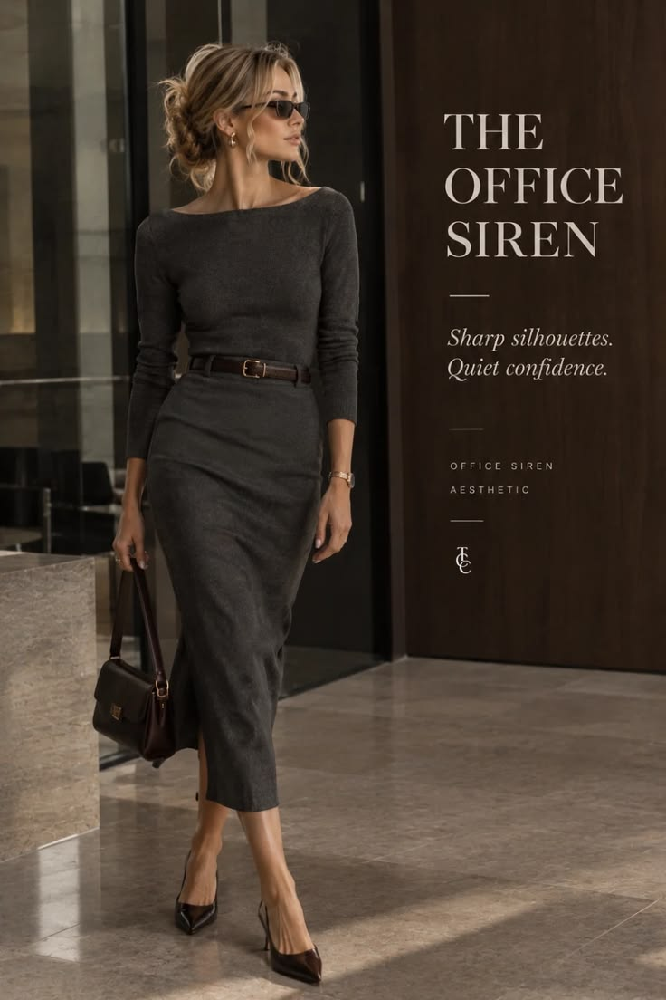

Trends & Styling
Office siren: knit and pencil skirt
Style inspiration
A fitted charcoal boat neck knit with a matching pencil midi skirt and a slim leather belt.
Styling tips
- Matching tops and skirts create a sleek, long line.
- A slim belt defines the waist without adding bulk.
- Keep jewelry minimal so the silhouette does the work.
Get the look
This photo is styling inspiration. There is no direct link to these exact pieces, so these are close matches you can find.
Your fit:
Charcoal boat neck knit topBudget findsPremium picks
Find similarPencil midi skirtBudget findsPremium picks
Find similarSlim leather beltBudget findsPremium picks
Find similarPrices change often, so check the current price on Amazon. Budget finds and Premium picks open the same search filtered by price. As an Amazon Associate I earn from qualifying purchases. Links on this site are affiliate links.
 Inspo
Inspo Shop
Shop Shop
Shop Shop
Shop